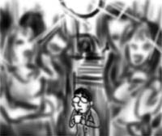
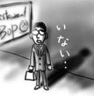
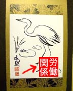
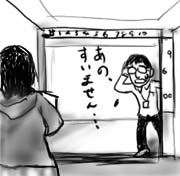
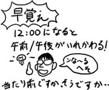
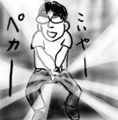

ドレスコードのあるClubというと、フロアでR&Bが生演奏されているようなお高い感じだと思い込んでいたのですが、いざたどり着いてみると普通にDJブースのある普通のClubという感じでした。寂しい通り沿いに駐車場があり、そこに小さいカラーボールを無理やり設置して回転させているのをみるとなんとなく物寂しい雰囲気がします。
結局普通のClubなので、客はみんな普通に半そでシャツ＋パンツ姿であり、ここでもフォーマルないでたちなのはハッキリ言って僕だけでした。Natalyaは「no slacks」と書いていましたが、男性客はだいたいスラックスでした。Natalyaはきっと「No Sneaker」と勘違いしたんだなぁ、no jeans, no slacksってよく考えると全然つじつま合ってないよなぁ、と脳内で謎解きが始まります。もっと早く気づいていれば。
屋内外あわせて3フロアあって、かかっている曲はだいたいHip Hopでした。一番大きいフロアでは、豹柄パンツをはいた薄着のお姉さんがお立ち台(?)でクネクネと踊っており、その直球ぶりに驚愕しました。頭で映画『ブレイド』の冒頭シーンが再生されます。フロアに血が降り注ぐな！とぼんやり思っていたら、誰かがカクテルをフロアに撒き散らし、店員がモップでフロアを掃除してまわる様がフラッシュライトで断続的に映し出される、というおもしろシーンになりました。
掃除が終わると、その一番大きいフロアにL.A.のHip Hopヒーロー(多分)がYo!Yo!とあらわれ、パフォーマンスを披露しはじめましたが、Natalya他女性陣は「マイクがうるさい」と一蹴して他のフロアへ移動を始めたのは、ちょっと愉快でした。
観察の結果、フロアでは、男性が気に入った女性に近づく→会話の後一緒に踊って一時の接触を楽しむ、というプロセスが回っているらしいことがわかりました。むしろ音楽よりそっちが主眼ぽいです。ぼんやり見ていると何人かの男性がNatalya他女性陣にアプローチしていました。
なぜかアルコールの味がしないジントニックをちゅーちゅー吸いながらフロアの隅っこでぼんやりしている間、女性陣は前述のプロセスに則ってフロアで異性間交流を楽しんでいたので、よかったんじゃないかな、と思います。

そうしていると唐突にフロアに照明がともり、クローズとなりました。時刻は1時40分。2時前に閉まるClubというのを初めて見た気がします。
帰りの車の中では、後部座席で女性陣が声をかけてきた男性批評で盛り上がっていました。「最後の彼とか19歳だって！19歳！若すぎ！」とかそんな感じで。Clubはアルコールを売ってて、お酒は21歳以上からなのに、19歳って入場できるのでしょうか。謎です。
みんなを降ろしてからフリーウェイを走って帰宅しました。途中なんだかオービスが光った気がしないでもないのですが、とりあえず忘れることにします。(おわり)
8時集合だったのに、駐車場がなかなか見つけられなくて、レストランに到着したのは8時を15分ほど過ぎてからでした。
外から軽く店内を見渡しても、テーブルにも待ち合いのスペースにも知人の顔を見かけることが出来なかったので、素直に店員に聞いてみたところ、僕が最初の一人だという事実を知りました。 みんな逃げたのか。

結局それから20分くらい待ったでしょうか。ようやく主役のNatalyaが登場。プレゼントを渡すと一通り喜んでもらえたのでよかったです(再利用だけど)。特にパンプキン・キャンドルは「なんでこれが好きなの知ってるの？いい香りがするんだよね」と言ってくれました(再利用なのに)。もちろん、そんな香りがすることなんて知らなかったのですが(放置していたから)。パッケージのビニール越しに匂いを嗅ごうとするNatalyaですが、一応払ったとはいえ発掘時には1年分のホコリが積もっていたので意味もなくハラハラします。良心も痛いところです。
その後ようやくゲストも登場し始めましたが、男性陣でスーツを着ていたのは僕だけでした。
レストランは、安くて量の多い系のイタリアンでした。Natalya、僕たち昨日もイタリアン食べたんじゃ(伏線回収)！他のテーブルではジョックス学生が店員と「ハッピーバースデー」を大音量でがなりたてるイベントが間断なく発生。そのうち僕らのテーブルでもやることになるんだろうナァ…(なりました)。
ハッピーバースデー・イベントをこなし、やたらとあま〜いデザート(口に入れると砂糖がじゃりじゃり音を立てるチョコケーキ)をやっつけると、とうとうClubへ移動ということになりました。この時点で当初の終了時刻である23:00前です。おまけに男性陣は僕ともう一人を残して、これで帰るといいます。「そうなんだ、普通に帰るって言えばよかったんだ。そうだよね…」という言葉が脳内をぐんぐんと駆け巡ります。
他の参加者の車は公営駐車場に停めておき、僕の車1台に乗り合わせてClubへ向かいます。(つづく)
昨日の昼食時に、同僚のNatalyaから「土曜日の私の誕生パーティ、みんなも来るから来る？」と聞かれたので深く考えずに、そして変に断ることの出来ない小心者ぶりから「うん」と答えたところ、メールで詳細が送られてきました。
8:00PM〜23:00PM ディナー、その後ClubでDancing
助けて！(特にDancing) 。そもそもClubに行き慣れてない自分には、何をどうすればいいのかさっぱり想像がつきません。さらに詳細を読み進めます。
Clubはドレスコードあり。no jeans, no slacks, no baseball hats
野球帽は持ってないからいいとして、ジーンズもスラックスも駄目なら何を履けばいいんだろう。 Natalyaに聞くと「セミ・フォーマル」ということですが、そういう「ちょっといい服」というものを全然持っていない僕は自動的にスーツ着用ということになるのでしょうか。
というわけで遅めの昼食にうどんを食べながら、スーツと靴を用意します。ゆで卵は最高だナ。うどんをすすりながらぼんやり考えたところ、パーチーには誕生日プレゼントとかバースデーカードとかが必要なのではないでしょうか(当然です)。
カード類は行きつけの本屋(本屋にだけは詳しいze!)にあるのですが、問題はプレゼントです。何がいいでしょう。こちらではプレゼントに一輪の花なんかを添えたりするのでしょうか。花屋なんて知らないですし、むしろ日常に目にしていても識域下で認識なんてされていません。どうしよう。花屋ジプシー。
ゆっくりもしていられないのでプレゼント放浪の旅に出発。結局、花屋は見つかりませんでした。探している間、ゆで卵が悪かったのしょうか、腹が痛くなりました。おまけに頭痛もしてきました。こんなのでパーチーは平気なんだろうかと不安になります。
結局See'sで贈答用のチョコを購入。バースデーカードは本屋で似非東洋趣味で掛け軸を模した意匠のものを買うことにしました。朱印にはなぜか「労働関係」と書かれています。同僚の誕生パーティなので一応間違ってはいないのですが、しかし…。

これに去年ESLのハロウィン・パーティでもらって放置しっぱなしのパンプキン・キャンドルを足せばなんとなくプレゼントっぽくなりました。再利用ですいません…。
頭痛がひどいので家に帰って時間まで寝た後、いよいよパーティへ出発です。(つづく)
グループ内で、だいたい年齢が近しい人たちと集団で昼飯に出かけました。
5人乗りの車に6人を無理矢理詰め込んでイタ飯屋(伏線)へ。後部座席でもシートベルト着用が必須のアメリカでこんなドライブができるなんて思ってみなかったです！もちろん僕はかさが小さいので、後部座席でぎゅーぎゅーと。
食事を終えてオフィスへ戻る中、同僚のNatalyaが「男の人にとってロマンチックなことって何？」と男性陣に向かって問いかけます。「ほら、花束とか、夜景とか、いろいろあるでしょう」。当然答えられるはずもないので黙っていようと思っていたところ、前で運転席のFaradと助手席のJamesが窓の外を指差しながら「あ、ここの店でプロテイン買ったんだっけ」と他の話をしているのが耳に入りました。
今だ、会話のチャンス。粉だ！
「プロテイン買うのってロマンチック？」
こうしてNatalyaのふった話題は露と消えていくのでした。俺、もうダメだ…。
朝出社すると、11時からミーティングだと言われました。おまけに何やら書類を渡されて、プレゼンを求められました。ミーティングの議題すらよく分かってないんですけど。
会議室で東海岸と電話回線で繋ぎながら、しどろもどろで説明、というかほとんど書いてあることを読み上げてました。適宜、グループ長から「資料のこの欄はこういうことを書くところだ」などとフォローが入ります。そうだったですか！
同機能の市場でのベンチマークはどうなってるのか？と言われても、当然そんなこと事前に調べてるわけでも知ってるわけでもなく、話は「今後調査必要」とそういう結論になって終わって行きました。別に僕が悪いわけではないと思うのですが、なかなか凹めます。
そして、僕の次からはなぜか発表者が一言も発しないまま、グループ長主体で議題が終わっていくのでした。僕の発表に「資料のフォーマットのアドバタイズ・デモ」以外の意味が果たしてあったんでしょうか。ガクーン。
今日も今日とてグループランチです。
1階のロビーでみんなが集まるのを待っていると、同僚のKahnが「日本だとデートはどこへ行くの？」と聞いてきました。そんなこと聞かれても分からないので「ベトナムではどうなの？」と逆に聞き返すことで回避。「うちの国では、そうだな。平日のデートなら、夜にレストランだな。休日になると、昼にレストラン、夜もレストランだな」と返されました。「映画館とかは？」と聞くと「あるよ。でもレストランの中なんだ」そうでしたか！
「それよりも聞いたんだけどさ。日本の嫁さんは、家に帰ると家の奥まで抱きかかえて運んでくれて、服を着替えさせてくれて、またテーブルまで運んでくれて、ご飯を食べさせてくれて、風呂にも入れてくれるって本当？」とKahn。何だそれ！お妾さんとか遊郭とかが間違って伝搬されたのでしょうか。「そんなわけないよ！一体何で読んだんだよ！」と言うと「なんか、あー、文書(document)で」思わず、横にいたSeanと同時に「何の文書だよ！」とツッコんでいました。
「なんだよ、信じてないのかよう」というKahnに対して、すでにロビーに来て横で話を聞いていたDaltonが「だったらgoogleで検索してみようぜ」と言いました。「そんなの、あったとしてもwww.kahnsdream.comにしかないよ！」と僕。
我ながら奇麗にオチをつけたと思います。
同僚のTangは、妻子がないのになぜか車にベビーシートが置いてあったり、いろいろと謎な人物です。
Tang、Tuan、Duyの４人で昼ご飯を食べにいった帰りのこと。オフィスまで戻って来てエレベータに乗り込んだ時、僕らとは別に地下から上がって来た黒人の中年女性が先客としてエレベータ内に立っていました。僕らのオフィスは6階、彼女はどうやら9階まで上がるようです。それを見たTangが「(停まるのは)6階と9階か。シックス、ナインだな！」と大声でうれしそうに話し出したため、大変気まずい思いをする羽目に。
6階に着いた時、なぜか僕とTuanが同乗した女性にペコペコと謝ることになりました(Duyは大ウケして大爆笑中なので)。Tang、恐ろしい男です。

朝9時頃、出社準備をしてたらマネージャのPaulから携帯に電話がありました。どうも僕がチェックインする予定のコードがまだチェックインされてないからビルドが止まっているようです。
「あれ、昨日ビルドスケジュール見たら、チェックインは12:00PMまでにって書いてあったんですけど」と答えると「あれは東海岸時間だからこっちだと朝の9時になるんだよ」と言いいます。12:00PMって真夜中のことじゃなかったっけ！？とぼんやり思いながら、すぐ行きますと答えて家を出ました。
会社についてからみんなにインタビューしてみた結果、全員が12:00PMが正午、12:00AMが深夜と答えてくれました。かなりの衝撃でした。今までずっと勘違いしていたようです。そして24時間表記はほんとうにすばらしいなと思いました。

今日は部のPicnic Dayです。昼から近所の公園に集まってバーベキューを食べ、リクリエーションをして遊ぶという従業員感謝デーみたいな日です。
近所の公園のはずなのに30分遅れでたどり着き(迷ったから)、皆に遅れてバーベキューチキンを頬張っていると、同僚のJengにチェスに誘われました。実はチェスをまともにプレイするのはこれが初めてです。ポーンがすぐ前の駒を取れなかったり、なんか１度だけキングとポーンが入れ替えられたり、訳が分かりません。モモンガがすぐに生きることを諦めるように、僕はすぐに勝つことを諦めてしまうのでこの手のゲームは大の苦手です。後ろから見ていたChetに「こんな(ひどい)ことになってるチェス盤、初めて見た」と言われました。
その後、チームメンバにバレーボールに誘われたため、Jengと分かれて参加。こっちは何も考えずにボールを叩いていればそのうち勝手に終わるので楽と言えば楽です。
ところで、僕が「安物のズボンはやっぱり所詮安物なんだなぁ」と本当に心から知ったのは、安く買ったジーンズの股間のチャックがゆるくて、すぐに全開になってしまうことに気づいた時でした。

セクハラにならなくて本当によかったと思います(まとめ)。